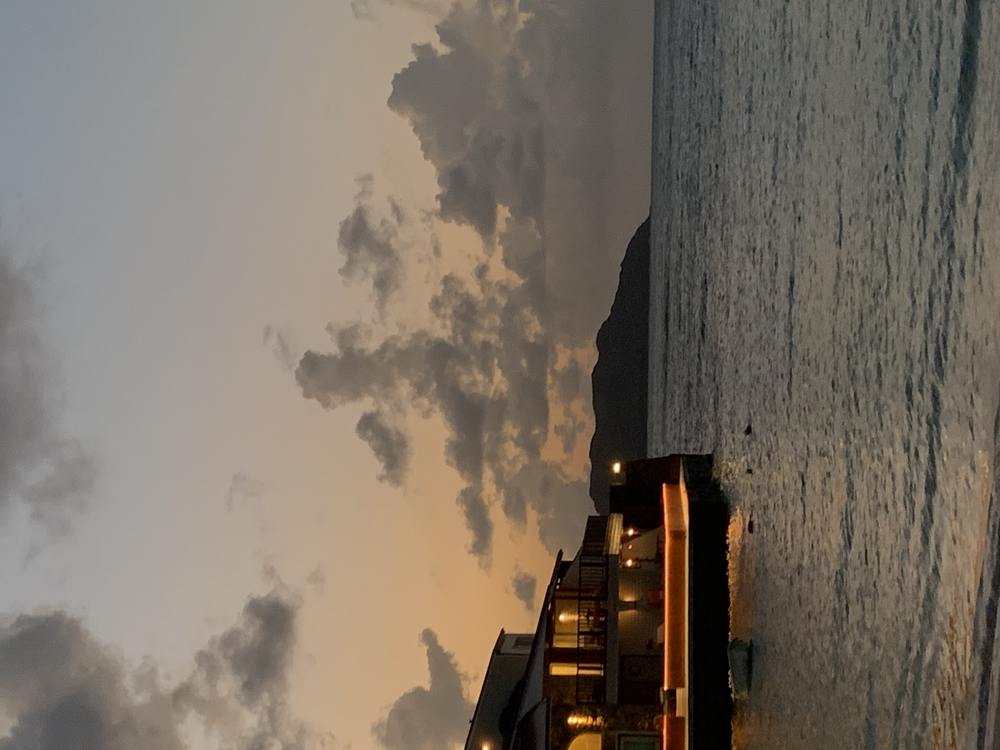
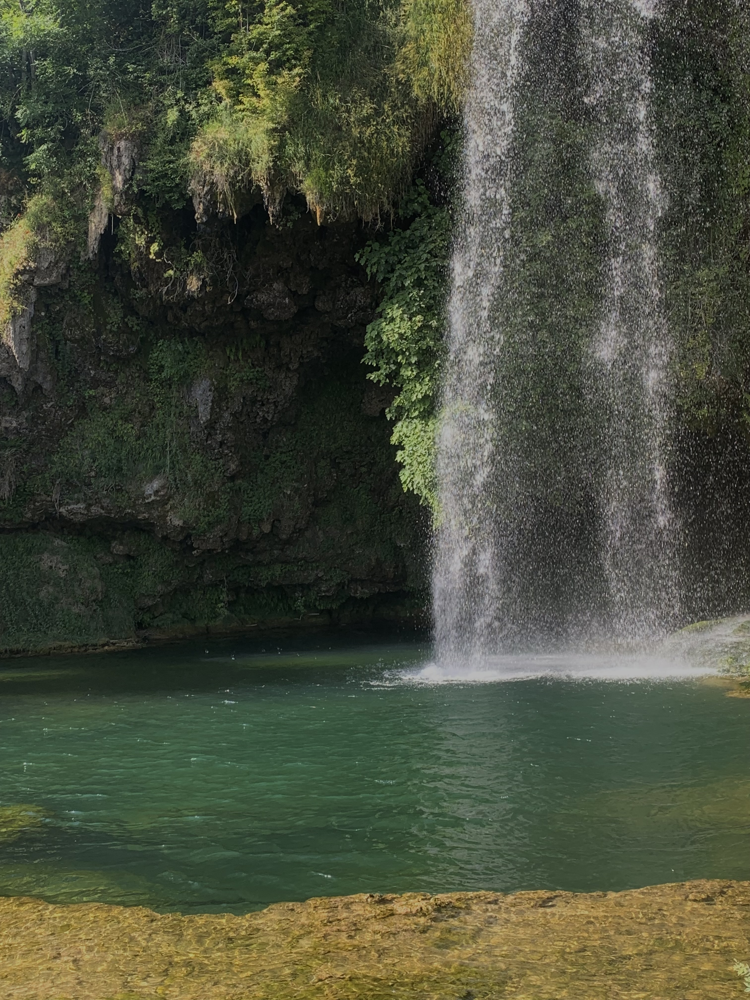

Vienna, Austria
I went from February 14 to February 16, 2022. It is a very beautiful city with a very historical but also very modern dimension.


Saint-Barthélemy
I was there for a month this summer, it was exceptional. The landscapes are fantastic, as well as the people, the climate and the culture.

Toulouse, South of France
My family lives just outside of Toulouse. It's always a pleasure to go back there for the calm, the sun and the conviviality.


Gant, Belgium
I was there for one day. It is a very beautiful city, very dynamic and full of charm.